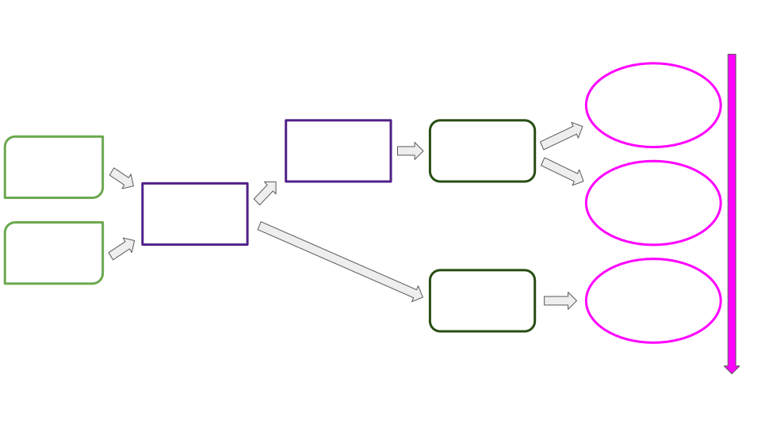
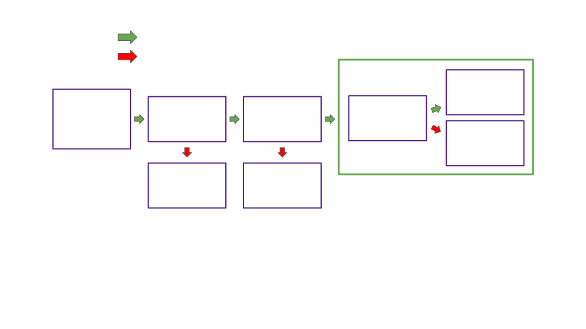

<!DOCTYPE html>
<html lang="en">

<head>
  <meta charset="utf-8" />
  <meta name="viewport" content="width=device-width, initial-scale=1.0, maximum-scale=1.0, user-scalable=no" />

  <title>Deep Dive, Availability Cores</title>
  <link rel="icon" href="./../../../assets/favicon.svg" />
  <link rel="shortcut icon" href="./../../../assets/favicon.png" />
  <link rel="stylesheet" href="./../../../dist/reset.css" />
  <link rel="stylesheet" href="./../../../dist/reveal.css" />
  <link rel="stylesheet" href="./../../.././assets/styles/PBA-theme.css" id="theme" />
  <link rel="stylesheet" href="./../../../css/highlight/shades-of-purple.css" />

  <link rel="stylesheet" href="./../../.././assets/styles/custom-classes.css" />

</head>

<body class="site">
  <header class="site-header">
    <!-- This logo is a link only on the watching server, not the production build -->
    <a href="">
      
    </a>
  </header>
  <main class="reveal">
    <article class="slides">
      <section  data-markdown><script type="text/template">

# Deep Dive, Availability Cores

<aside class="notes"><p>Hello!</p>
<p>I&#39;m Bradley Olson</p>
<p>Was student at first Academy</p>
<p>Currently on Parachains Core Team</p>
<p>Will present 3 lectures providing a window into Polkadot core, a slice of where we&#39;re at and where we&#39;re headed.</p>
<p>First a look at availability cores, the abstraction enabling flexible purchases of blockspace under the umbrella of Polkadot shared security.</p>
<p>Lets get to it</p>
</aside></script></section><section  data-markdown><script type="text/template">
## Addressing the Dual Naming

<pba-flex center>

- In the code: Availability core
- Outside the code: Execution core

</pba-flex>
</script></section><section  data-markdown><script type="text/template">
## Overview

<pba-flex center>

- What do availability cores represent?
- How do cores map parachain leases and claims to validator subsets?
<!-- .element: class="fragment" data-fragment-index="1" -->
- How do cores gate each step of the parachains protocol?
<!-- .element: class="fragment" data-fragment-index="2" -->
- What advantages do cores give us now?
<!-- .element: class="fragment" data-fragment-index="3" -->
- What roadmap items do cores accommodate?
<!-- .element: class="fragment" data-fragment-index="4" -->

</pba-flex>
</script></section><section  data-markdown><script type="text/template">
## Review, Blockspace

> Blockspace is the capacity of a blockchain<br/>to finalize and commit operations

Polkadot's primary product is _blockspace_.
</script></section><section  data-markdown><script type="text/template">
## Blockspace, Use It or Lose It

Polkadot blockspace is consumed in two ways:

<pba-flex center>

1. When the relay chain validates, includes, <br/> and finalizes a parachain block
1. When the capacity to validate a parachain block<br/> is left unused and expires
<!-- .element: class="fragment" data-fragment-index="1" -->

</pba-flex>


<!-- .element: class="fragment" data-fragment-index="1" -->
</script></section><section  data-markdown><script type="text/template">
## Availability Core Defined

<pba-cols>
<pba-col center>

- Availability cores are the abstraction we use to allocate Polkadot's blockspace.
- Allocated via leases and on-demand claims
<!-- .element: class="fragment" data-fragment-index="1" -->
- Cores divide blockspace supply into discrete units, 1 parachain block per relay chain block per core
<!-- .element: class="fragment" data-fragment-index="2" -->
- Why "availability"?
<!-- .element: class="fragment" data-fragment-index="3" -->
- Why "core"?
<!-- .element: class="fragment" data-fragment-index="4" -->

</pba-col>
<pba-col center>


</pba-col>
</pba-cols>

<aside class="notes"><ul>
<li>&quot;Availability&quot;, because a core is considered occupied by a parachain block candidate while that candidate is being made available. But cores mediate access to the entire parablock validation pipeline, not just availability.</li>
<li>&quot;Core&quot;, because many candidates can be made available in parallel, mimicking the parallel computation per core in a computer processor.</li>
</ul>
</aside></script></section><section  data-markdown><script type="text/template">
## Availability

Though cores gate the entire parachain block pipeline,<br/> the availability process alone determines when these cores are considered occupied vs free.

To recap, the goals of availability are:

<!-- .element: class="fragment" data-fragment-index="1" -->

1. To ensure that approvers will always be able to recover the PoVs to validate their assigned blocks
<!-- .element: class="fragment" data-fragment-index="2" -->
2. To ensure that parachain nodes can recover blocks in the case that a parablock author fails to share them, through malintent or malfunction
<!-- .element: class="fragment" data-fragment-index="3" -->
</script></section><section  data-markdown><script type="text/template">
## Core States

<pba-cols>
<pba-col center>

Free


</pba-col>
<pba-col center>

Scheduled


</pba-col>

<pba-col center>

Occupied


</pba-col>
</pba-cols>

<aside class="notes"><ul>
<li>Before going any farther we need to talk about core states</li>
<li>CoreState: Free -&gt; core has not been assigned a parachain via lease or on-demand claim</li>
<li>CoreState: Scheduled -&gt; Core has an assigned parachain and is currently unoccupied</li>
<li>CoreState: Occupied -&gt; Core has assignment and is occupied by a parablock pending availability</li>
</ul>
</aside></script></section><section  data-markdown><script type="text/template">
## The Availability Process

<pba-flex center>

1. Block author places a candidate on-chain as backed, immediately occupying its scheduled core
<!-- .element: class="fragment" data-fragment-index="1" -->
1. Candidate backers distribute erasure coded PoV chunks
<!-- .element: class="fragment" data-fragment-index="2" -->
1. Validators distribute statements as to which candidates they have chunks for
<!-- .element: class="fragment" data-fragment-index="3" -->
1. Availability threshold is met (2/3 vs the 1/3 needed to reconstruct POV)
<!-- .element: class="fragment" data-fragment-index="4" -->
1. Candidate marked as included on chain and core freed
<!-- .element: class="fragment" data-fragment-index="5" -->
1. Approvers or parachain nodes retrieve PoV chunks as needed
<!-- .element: class="fragment" data-fragment-index="6" -->

</pba-flex>
</script></section><section  data-markdown><script type="text/template">
## Cores and Blockspace Over Time


<aside class="notes"><p>Metaphor:</p>
<ul>
<li>Relay chain: Train loading bay</li>
<li>Relay block: Train leaving station every 6 seconds</li>
<li>Parachain block: One train car worth of cargo</li>
<li>Availability core: Car index within all trains</li>
</ul>
<p>If you have a lease on core 4, then you have the right to fill train car 4 on each train with whatever you want to ship.</p>
<p>Q: How would an on-demand claim be represented in this metaphor?</p>
</aside></script></section><section  data-markdown><script type="text/template">
# Mapping Leases and Claims to Validator Subsets
</script></section><section  data-markdown><script type="text/template">
## The Big Picture



<aside class="notes"><ul>
<li>Which steps of the parachains protocol are missing, and why?</li>
<li>Going to dive into each piece</li>
<li>Questions?</li>
</ul>
</aside></script></section><section  data-markdown><script type="text/template">
## Assigning Leases and Claims to Cores


<aside class="notes"><ul>
<li>Leases have indices and pair to cores with the same index</li>
<li>Cores not designated as on-demand and without a paired lease are left free, their blockspace wasted</li>
<li>When on-demand claims are queued, they are each assigned a designated core in ascending order, looping when reaching the last core</li>
</ul>
</aside></script></section><section  data-markdown><script type="text/template">
## Assigning Backing Groups to Cores


<aside class="notes"><ul>
<li>Round robin, fixed intervals</li>
</ul>
<p>This prevents a byzantine backing group from interrupting the liveness of any one parachain for too long.</p>
</aside></script></section><section  data-markdown><script type="text/template">
## Backing Group Formation


<aside class="notes"><ul>
<li>Validators randomly assigned to groups at start of session.</li>
<li>Group count is active validator count / max group size rounded up</li>
<li>Groups are partitioned such that the largest group and smallest group have a size difference of 1</li>
</ul>
</aside></script></section><section  data-markdown><script type="text/template">


## Assigning Approvers to Cores

<pba-flex center>

- Randomness via schnorrkel::vrf
- Approver assignments activated with delay tranches until threshold met
<!-- .element: class="fragment" data-fragment-index="1" -->
- Results in 30-40 approvers checking each block
<!-- .element: class="fragment" data-fragment-index="2" -->
- Different assignments each block prevent DOS
<!-- .element: class="fragment" data-fragment-index="3" -->

</pba-flex>
</script></section><section  data-markdown><script type="text/template">
## Putting the Pieces Together


</script></section><section  data-markdown><script type="text/template">
## Occupying Assigned Cores: With Lease



<aside class="notes"><p>Q: What step of the parachains protocol takes place between &quot;Supplied backable candidate&quot; and &quot;availability process?</p>
</aside></script></section><section  data-markdown><script type="text/template">
## Occupying Assigned Cores: On Demand


</script></section><section  data-markdown><script type="text/template">
## Core States in the Runtime

In file: polkadot/runtime/parachains/src/scheduler.rs

<div style="font-size: 0.82em;">

```rust[1|3-8|5,10-16]
pub(crate) type AvailabilityCores<T> = StorageValue<_, Vec<Option<CoreOccupied>>, ValueQuery>;

pub enum CoreOccupied {
    /// A parathread (on-demand parachain).
    Parathread(ParathreadEntry),
    /// A lease holding parachain.
    Parachain,
}

/// Parathread = on-demand parachain
pub struct ParathreadEntry {
	/// The claim.
	pub claim: ParathreadClaim,
	/// Number of retries.
	pub retries: u32,
}
```

</div>

<aside class="notes"><p>Q: When Option is None, what does that indicate?</p>
<ul>
<li>Which para occupies a core is stored separately in the following structure</li>
</ul>
</aside></script></section><section  data-markdown><script type="text/template">
## Core Assignments in The Runtime

In file: polkadot/runtime/parachains/src/scheduler.rs

<div style="font-size: 0.82em;">

```rust[1|3-10|9,12-17]
pub(crate) type Scheduled<T> = StorageValue<_, Vec<CoreAssignment>, ValueQuery>;

pub struct CoreAssignment {
    /// The core that is assigned.
    pub core: CoreIndex,
    /// The unique ID of the para that is assigned to the core.
    pub para_id: ParaId,
    /// The kind of the assignment.
    pub kind: AssignmentKind,
}

pub enum AssignmentKind {
	/// A parachain.
	Parachain,
	/// A parathread (on-demand parachain).
	Parathread(CollatorId, u32),
}
```

</div>

<aside class="notes"><ul>
<li>Vec of all core assignments</li>
<li>Pairs ParaId with CoreIndex</li>
<li>AssignmentKind carries retry info for on-demand</li>
</ul>
</aside></script></section><section  data-markdown><script type="text/template">
## How Cores Gate Each Step of the Parachains Protocol
</script></section><section  data-markdown><script type="text/template">
## How Core Assignments Mediate Backing

Each parablock candidate is built in the context of a particular `relay_parent`.

Validators query their core assignment as of `relay_parent` and refuse to second candidates not associated with their backing group.

<!-- .element: class="fragment" data-fragment-index="1" -->

<aside class="notes"><ul>
<li>Relay parent context: max PoV size, current parachain runtime code, and backing group assignments.</li>
</ul>
</aside></script></section><section  data-markdown><script type="text/template">
### How Core Assignments Mediate Backing (Cont.)

`handle_second_message()` in the Backing Subsystem.

```rust[1|6]
if Some(candidate.descriptor().para_id) != rp_state.assignment {
	gum::debug!(
		target: LOG_TARGET,
		our_assignment = ?rp_state.assignment,
		collation = ?candidate.descriptor().para_id,
		"Subsystem asked to second for para outside of our assignment",
	);

	return Ok(())
}
```
</script></section><section  data-markdown><script type="text/template">
## Cores and Backing On-Chain

<pba-flex center>

- For each core that is either unoccupied or is about to be a new candidate is found
- A candidate for the parachain scheduled next on that core is provided to the block author
<!-- .element: class="fragment" data-fragment-index="1" -->
- Backed on-chain -> immediately occupies core
<!-- .element: class="fragment" data-fragment-index="2" -->

</pba-flex>

<aside class="notes"><ul>
<li>Review possible core states</li>
<li>Mention time-out vs made available</li>
</ul>
<p>Q: What does &quot;immediately occupies core&quot; imply?</p>
</aside></script></section><section  data-markdown><script type="text/template">
## Cores and Backing On-Chain, Code

<div style="font-size: 0.82em;">

Code determining whether to back a candidate and which, greatly simplified

```rust[1|24|2-4|5-13|13-23|28-29]
	let (para_id) = match core {
		CoreState::Scheduled(scheduled_core) => {
			scheduled_core.para_id
		},
		CoreState::Occupied(occupied_core) => {
			if current_occupant_made_available(core_idx, &occupied_core.availability)
			{
				if let Some(ref scheduled_core) = occupied_core.next_up_on_available {
					scheduled_core.para_id
				} else {
					continue
				}
			} else {
				if occupied_core.time_out_at != current_block {
					continue
				}
				if let Some(ref scheduled_core) = occupied_core.next_up_on_time_out {
					scheduled_core.para_id
				} else {
					continue
				}
			}
		},
		CoreState::Free => continue,
	};

	let candidate_hash =
		get_backable_candidate(relay_parent, para_id, required_path, sender).await?;
```

</div>

<aside class="notes"><ul>
<li>Discuss core freeing criteria</li>
<li><code>bitfields_indicate_availability</code><ul>
<li>next_up_on_available</li>
</ul>
</li>
<li>availability time out<ul>
<li>next_up_on_timeout</li>
</ul>
</li>
</ul>
</aside></script></section><section  data-markdown><script type="text/template">
## Cores and Approvals, Disputes, Finality

Each included candidate has already occupied an availability core

Approvals, Disputes, and Finality are only provided to included candidates
</script></section><section  data-markdown><script type="text/template">
## Advantages Cores Give us Now

<pba-flex center>

1. Predictability of parachain execution
1. Predictability of allocation for execution sharding
<!-- .element: class="fragment" data-fragment-index="1" -->

</pba-flex>


<aside class="notes"><ul>
<li>Regularly rotating pairings between cores and backing groups lessen the impact of potential bad validator subsets</li>
<li>Cores accommodate advance allocation making costs for parachains predictable</li>
<li>Core time can be resold or split for precise allocation</li>
</ul>
</aside></script></section><section  data-markdown><script type="text/template">
# Cores and Roadmap Items


</script></section><section  data-markdown><script type="text/template">
## Exotic core scheduling

<pba-flex center>

- Multiple cores per parachain
- Overlapping leases of many lengths
<!-- .element: class="fragment" data-fragment-index="1" -->
- Lease + On-demand
<!-- .element: class="fragment" data-fragment-index="2" -->

</pba-flex>


<aside class="notes"><ul>
<li>Each color represents a parachain
Metaphor:</li>
<li>Multiple cars on the same train</li>
<li>Overlapping time spans of rights to fill different train cars</li>
<li>Long term rights to one car and buy rights to others for just one train</li>
</ul>
</aside></script></section><section  data-markdown><script type="text/template">
## Divisible and Marketable Blockspace

We want Parachains to buy, sell, and split blockspace such that they are allocated exactly as much as fits their needs.<br/><br/>

<pba-flex center>

- Core sharing via use-threshold blockspace regions
- Secondary markets for blockspace regions

</pba-flex>

<aside class="notes"><ul>
<li>Example: Region spanning 100 blocks. Split the region use so that each of two parties can submit up to 50 parablocks. Ownership proportion is enforced throughout the region such that each party can&#39;t submit more than 5 out of the first 10 blocks.</li>
</ul>
</aside></script></section><section  data-markdown><script type="text/template">
## Framing Shift: Blockspace vs Core Time

Blockspace is a universal term for the product of blockchains, while core time is Polkadot's particular abstraction for allocating blockspace or other computation.

<!-- .element: class="fragment" data-fragment-index="1" -->

Cores can secure computation other than blocks. For example, a smart contract could be deployed on a core directly.

<!-- .element: class="fragment" data-fragment-index="2" -->

Allocating cores by time rather than for a fixed block size could allow for smaller or larger parachain blocks to be handled seamlessly.

<!-- .element: class="fragment" data-fragment-index="3" -->
</script></section><section  data-markdown><script type="text/template">
## Resources

<pba-col center>

1. [Implementers Guide: Scheduler Pallet](https://paritytech.github.io/polkadot/book/runtime/scheduler.html)
1. [RFC: Agile Coretime](https://github.com/polkadot-fellows/RFCs/pull/1)
1. [RFC: Coretime Scheduling Regions](https://github.com/polkadot-fellows/rfcs/pull/3)
1. [Rob Habermeier's Blog: Polkadot Blockspace Over Blockchains](https://www.rob.tech/polkadot-blockspace-over-blockchains/)

</pba-col>
</script></section><section  data-markdown><script type="text/template">
<!-- .slide: data-background-color="#4A2439" -->

# Questions
</script></section>
    </article>
  </main>

  <script src="./../../../dist/reveal.js"></script>

  <script src="./../../../plugin/markdown/markdown.js"></script>
  <script src="./../../../plugin/highlight/highlight.js"></script>
  <script src="./../../../plugin/zoom/zoom.js"></script>
  <script src="./../../../plugin/notes/notes.js"></script>
  <script src="./../../../plugin/math/math.js"></script>

  <script src="./../../../assets/plugin/mermaid.js"></script>
  <script src="./../../../assets/plugin/mermaid-theme.js"></script>

  <script src="./../../../assets/plugin/chart/chart.js"></script>
  <script src="./../../../assets/plugin/chart/chart.min.js"></script>

  <script src="./../../../assets/plugin/tailwindcss.min.js"></script>

  <script>
    function extend() {
      var target = {};
      for (var i = 0; i < arguments.length; i++) {
        var source = arguments[i];
        for (var key in source) {
          if (source.hasOwnProperty(key)) {
            target[key] = source[key];
          }
        }
      }
      return target;
    }

    // default options to init reveal.js
    var defaultOptions = {
      controls: true,
      progress: true,
      history: true,
      center: true,
      transition: 'default', // none/fade/slide/convex/concave/zoom
      slideNumber: true,
      mermaid: {
        startOnLoad: false,
        logLevel: 3,
        theme: 'base',
        themeVariables: {
          primaryColor: purple,
          primaryTextColor: white,
          primaryBorderColor: pink,
          lineColor: pink,
          secondaryColor: lightPurple,
          tertiaryColor: lightPurple,
        },
      },
      chart: {
        defaults: {
          color: 'lightgray', // color of labels
          scale: {
            beginAtZero: true,
            ticks: { stepSize: 1 },
            grid: { color: "lightgray" }, // color of grid lines
          },
        },
        line: { borderColor: ["#ccc", "#E6007A", "#6D3AEE"], "borderDash": [[5, 10], [0, 0]] },
        bar: { backgroundColor: ["#ccc", "#E6007A", "#6D3AEE"] },
      },
      plugins: [
        RevealMarkdown,
        RevealHighlight,
        RevealZoom,
        RevealNotes,
        RevealMath,
        RevealMermaid,
        RevealChart
      ]
    };

    // options from URL query string
    var queryOptions = Reveal().getQueryHash() || {};

    var options = extend(defaultOptions, {"width":1400,"height":900,"margin":0,"minScale":0.2,"maxScale":2,"transition":"none","controls":true,"progress":true,"center":true,"slideNumber":true,"backgroundTransition":"fade"}, queryOptions);
  </script>


  <script>
    Reveal.initialize(options);
  </script>
</body>

</html>
